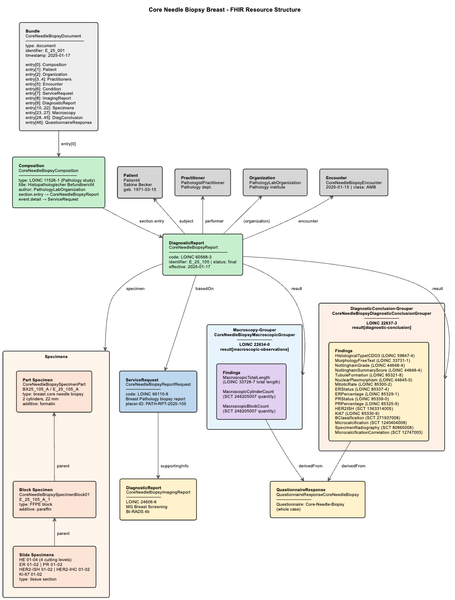

Links: Table of Contents | QA Report
http://ihe-d.de/CodeSystems/IHEXDStypeCode
http://www.genenames.org/geneId
https://www.medizininformatik-initiative.de/fhir/ext/modul-onko/CodeSystem/mii-cs-onko-tnm-n-kategorie-werte
urn:oid:2.16.840.1.113883.6.43.1
This fragment is not visible to the reader
This publication includes IP covered under the following statements.
| Type | Reference | Content |
|---|---|---|
| web | snomed.info | SNOMED CT: 373067005 (No (qualifier value)) |
| web | snomed.info | SNOMED CT: 33564002 (Structure of lower outer quadrant of breast (body structure)) |
| web | snomed.info | SNOMED CT: 52101004 (Present (qualifier value)) |
| web | snomed.info | SNOMED CT: 237371007 (Wide local excision of breast lesion (procedure)) |
| web | snomed.info | SNOMED CT: 7771000 (Left (qualifier value)) |
| web | snomed.info | SNOMED CT: 2667000 (Absent (qualifier value)) |
| web | snomed.info | SNOMED CT: 396487001 (Sentinel lymph node biopsy (procedure)) |
| web | www.bihealth.org |
|
| web | example.org |
IG © 2025+ BIH CEI
. Package breastcancerspec#0.1.0 based on FHIR 4.0.1
. Generated 2026-03-25
Links: Table of Contents | QA Report |
| web | www.medizininformatik-initiative.de | This Implementation Guide (IG) provides FHIR-based examples for structured breast cancer pathology reporting, based on the MII Kerndatensatz Pathologie profiles. |
| web | www.medizininformatik-initiative.de | MII Kerndatensatz Pathologie (2026.0.0) |
| web | www.medizininformatik-initiative.de | MII Kerndatensatz Onkologie (2026.0.0) |
| web | www.medizininformatik-initiative.de | MII Kerndatensatz Biobank (2026.0.0) |
|
BIH-Logo_neu.png |
|
coreneedlebiopsy-structure.png  |